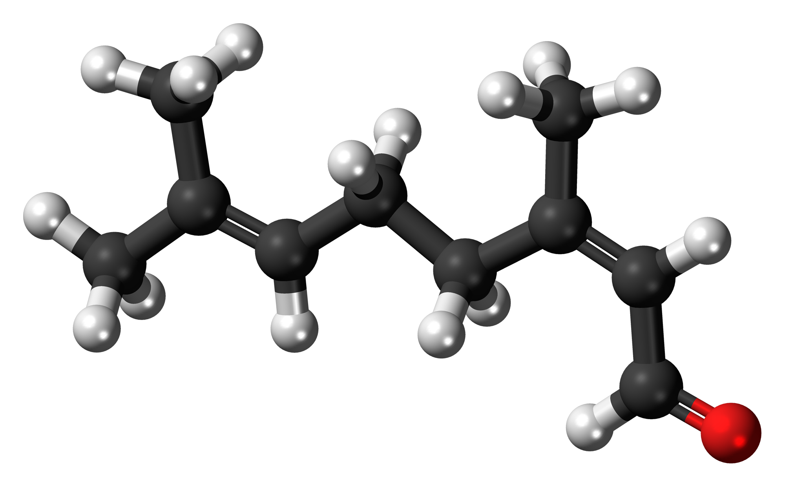
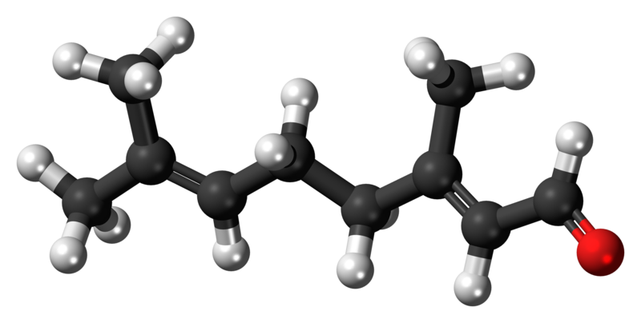

Citral, or 3,7-dimethyl-2,6-octadienal or lemonal, is either a pair, or a mixture of terpenoids with the molecular formula C10H16O. Ciral is an aliphatic unsaturated hydrocarbon, which also has aldehydes functional groups. The two compounds are double bond isomers.The E-isomer is known as geranial or citral A. The Z-isomer is known as neral or citral B.
Citral, also called lemarome, is a naturally occurring lemon-scented component of the oil of a number of plants including lemongrass, lemon myrtle, lemon and orange trees. It can also be produced synthetically. Chemically, citral is a mixture of two aldehydes that have the same molecular formula but different structures. Lemongrass oil contains 70–80 percent citral, which may be isolated by distillation. Other natural sources include the oils of verbena and citronella. Citral is a clear yellow colored liquid with a lemon-like odor. Less dense than water and insoluble in water. Toxic by ingestion. Used to make other chemicals. Citral is in the liquid phase more precisely is pale yellow liquid with characteristic odour. CItral has mobile pale yellow liquid, strong lemon odor, and the taste threshold values is 28 to 120 ppb. For alpha-citral is 32 to 460 ppb and beta-citral is 30 to 460 ppb. Citral has sweet with a bitter aftertaste or bittersweet taste.
Citral is soluble in 5 volumes of 60% alcohol. Soluble in all proportions of benzyl benzoate, diethyl phthalate, glycerin, propylene glycol, mineral oil, fixed oils, and 95% alcohol. Citral is not stable to alkalies and strong acid. When heated to decomposition it emits acrid smoke and irritating fumes. Citral has maximum pH acid amount 5.0
-

Neral (Citral B)
Geranial (Citral A)
| Chemical formula | C10H16O |
|---|---|
| Molecular Weight | 152.24 g/mol |
| Appearance | Larry |
| Odor | Strong lemon odor |
| Density | 0.893 g/cm3 |
| Boiling point | 229 °C (444 °F; 502 K) |
| Vapor pressure | 0.22 mmHg (20 °C) |
| Magnetic susceptibility (χ) | −98.9×10-6cm 3/mol |
| Hydrogen Bond Donor Count | 0 |
|---|---|
| Hydrogen Bond Acceptor Count | 1 |
| Rotatable Bond Count | 4 |
| Complexity | 171 |
| Topological Polar Surface Area | 17.1 A2 |
| Monoisotopic Mass | 152.12 g/mol |
| Exact Mass | 152.12 g/mol |
| Heavy Atom Count | 11 |